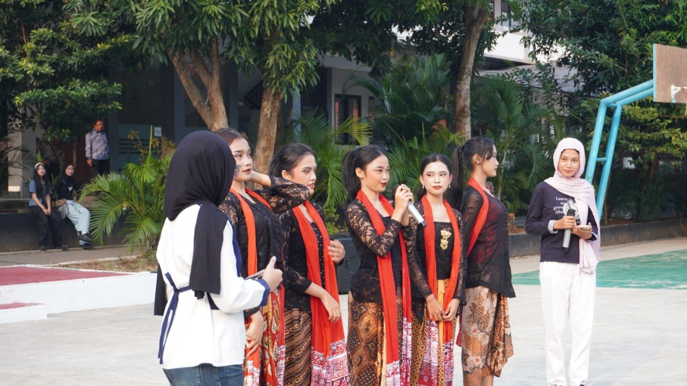
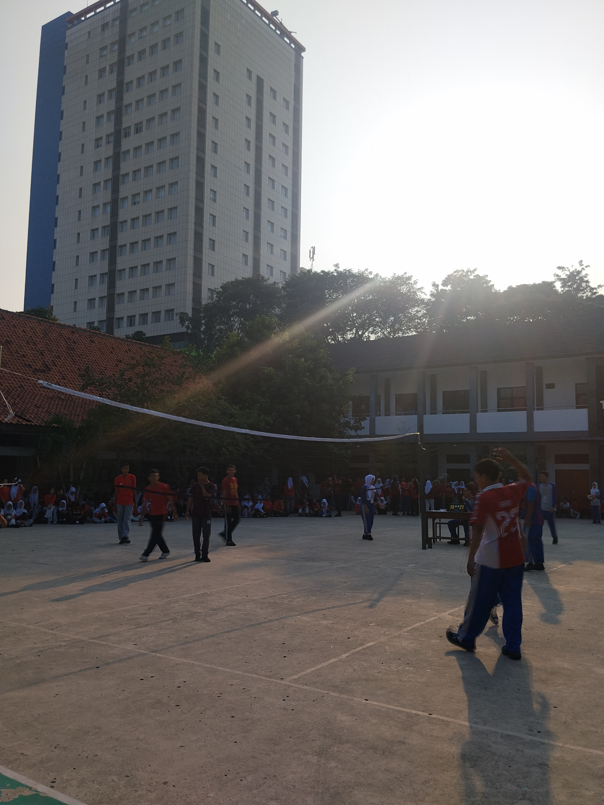

✦ CERITA DI SEKOLAH ✦
Kegiatan Sekolah SMKN 1 Tangerang
Momen kebersamaan, kreativitas, dan semangat
siswa dalam berbagai kegiatan sekolah.
🎨 Seni dan Kreativitas
✦ Gelar Apresiasi dan Kreasi Siswa

Kegiatan pada setiap hari Kamis di NESTA
yaitu apresiasi. Pendidikan sejatinya tidak
hanya diukur dari pencapaian akademis di
dalam ruang kelas, melainkan juga dari
bagaimana seorang individu mampu menemukan,
mengasah, dan mengekspresikan potensi terbaik
yang ada di dalam dirinya.
Sebagai bentuk komitmen dalam mendukung
perkembangan peserta didik, sekolah
menyelenggarakan kegiatan bertajuk
"Gelar Apresiasi dan Kreasi Siswa".
Acara ini menjadi ruang bagi para siswa
untuk menampilkan kreativitas, minat,
bakat, serta hasil kerja keras mereka.
Melalui kegiatan ini, siswa dapat belajar
menghargai karya orang lain, meningkatkan
rasa percaya diri, dan mengembangkan potensi
yang dimiliki dalam suasana yang positif.
🇮🇩 Nasionalisme dan Kebersamaan
✦ Peringatan Hari Kemerdekaan Indonesia

Peringatan Hari Ulang Tahun Kemerdekaan
Republik Indonesia di lingkungan sekolah
berlangsung dengan tertib, khidmat, dan
penuh antusiasme.
Berbagai perlombaan yang diselenggarakan
bukan semata-mata sebagai ajang rekreasi,
melainkan juga sebagai sarana pendidikan
karakter bagi para siswa.
Melalui kompetisi yang membutuhkan
ketangkasan dan kerja sama, seluruh warga
sekolah diajak untuk menerapkan nilai-nilai
gotong royong, sportivitas, serta semangat
pantang menyerah. Kegiatan ini diharapkan
dapat memperkokoh rasa nasionalisme,
mempererat persaudaraan, dan melatih daya
juang generasi muda.